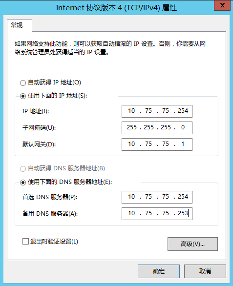
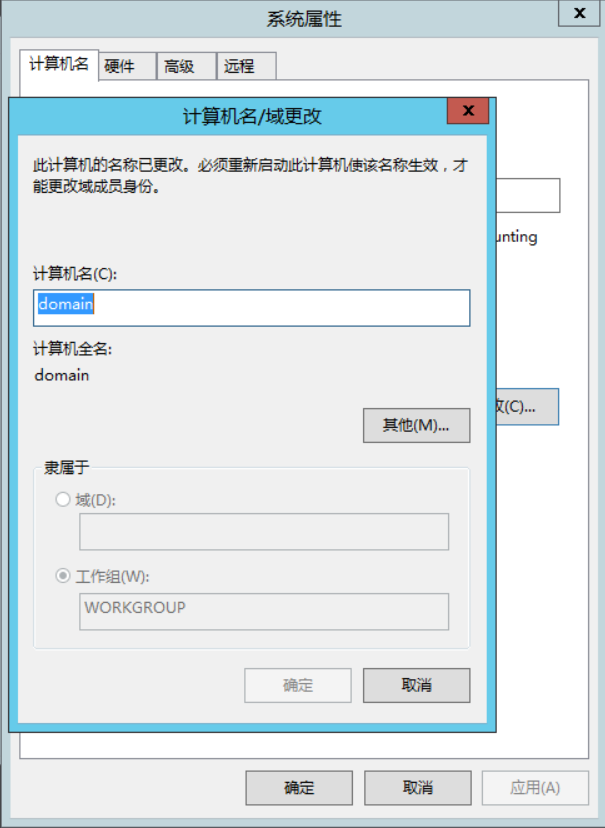
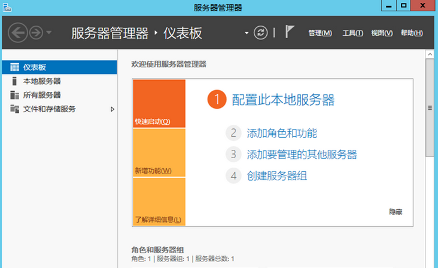
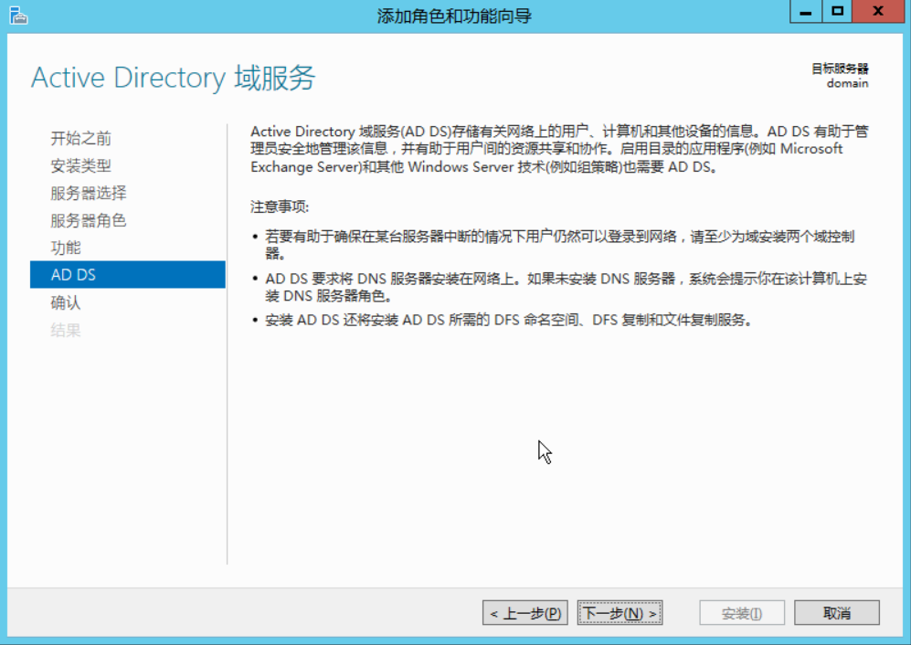
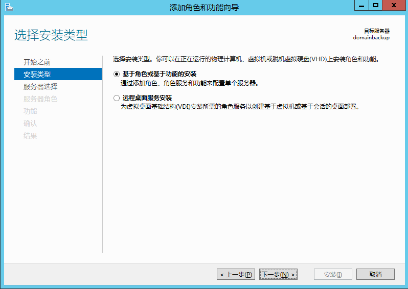
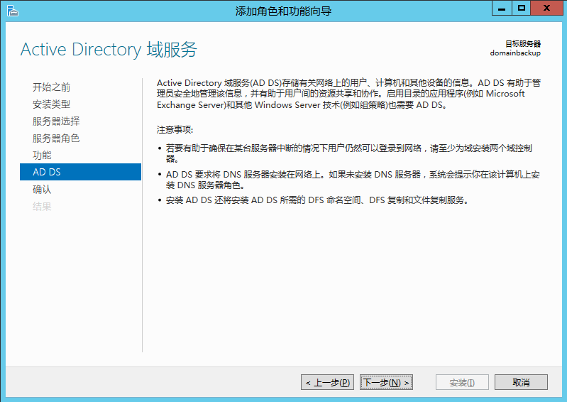

Windows Server 2012 R2搭建AD域及配置教程
关于Windows Server 2012 R2操作系统的安装，这里将不做记录，目前还没有安装服务器操作系统，可以参考《vmware workstation 15 pro 安装Windows Server 2012 R2操作系统详细教程》
##
一、部署主AD域控制器（部署单域控，按照以下步骤配置，配置双域控，请查阅全文。）
在部署AD域控制器前，我们首先需要将Windows Server 2012 R2操作系统的网络相关配置规划好，网卡（单端口、双端口网卡绑定）、服务器IP地址、子网掩码、默认网关、DNS服务器地址，由于该服务器既要充当AD的角色，也要充当网络DNS服务器的角色，因此DNS地址填写自己的IP地址，备用DNS填写从域控制器IP地址。（此次搭建AD域控制器采用双机方式，DNS部署不在这里展现，关于DNS服务器的搭建部署，请参考《Windows Server 2012 R2搭建DNS服务器的详细教程》）,操作系统网络信息如下图所示：

步骤1、修改主机名，单击“这台电脑”右键“属性”，在系统页面点击“更改设置”，“计算机名–更改”。计算机名随意，只是为了标识某一台设备而定义的名称，方便记忆。我这里输入“domain”;更改完计算机名会提示重启服务器，点击“立即重新启动”；

步骤2、点击Windows Server 2012 R2桌面左下角的“服务器管理器”，打开后，显示界面如图所示：

步骤3、点击“管理” > “添加角色和功能”，会弹出“添加角色和功能向导” ，点击下一步；

步骤4、这里选择“基于角色和基于功能的安装”，点击下一步；

步骤5、从服务器池中选择服务器，这里选择默认，点击“下一步”；假如您需要针对其他服务器主机安装AD角色，这里可以选择您需要的主机，点击下一步。
步骤6、角色选择，勾选“Active Directory域服务”，当勾选这个选项后，会弹出“添加Active Directory域服务所需的功能”，点击“添加功能”，然后返回到角色选择窗口，点击“下一步”；

步骤7、功能选择页面不需要做任何选择，直接点击“下一步”即可；

步骤8、这里介绍AD角色功能的注意事项，点击“下一步”；

步骤9、勾选“如果有需要，自动重新启动目标服务器”，点击安装；

步骤10、功能安装成功后，但不代表我们就将AD域控制器完全安装好了，这里点击“将此服务器提升为域控制器”
步骤11、在新弹出的“Active Directory域服务配置向导”，选择“添加新林(F)”,根域名处填写相应的域名，点击“下一步”；
步骤12、在域控制器选项处，选择新林和根域的功能级别，选择指定域控制器功能：DNS/GC/RODC，这里选择默认，然后在下面设置DSRM密码，点击“下一步”；

步骤13、直接点击“下一步”，由于不需要委派DNS，所以这里不需要设置；

步骤14、配置NetBios域名，若没有特殊需求，默认即可，点击“下一步”；

步骤15、配置日志，数据库，SYSVOL路径，若没有特殊需求，默认就可以，点击“下一步”；

步骤16、查看配置信息，若没有任何问题，直接点击“下一步”；

步骤17、先决条件检查，检查是否满足条件，条件满足后就可以直接点击“安装”；

步骤18、等待Active Directory的安装，需要重启服务器；
步骤19、重启完成后，就可以看到AD角色已经安装完成。

二、部署从域控制器
首先配置从域控制器服务器的IP地址、子网掩码、默认网关的参数。由于该服务器既要充当从AD域控制器角色，也要充当网络中备用DNS的角色，所以首选DNS填写主域控制器的IP地址，备用DNS填写自己的IP地址。网络信息如下图所示：

注：从域控制器步骤2～10和主域控制器的配置步骤雷同，可以直接跳到步骤11。
步骤1、修改主机名，单击“这台电脑”右键“属性”，在系统页面点击“更改设置”，“计算机名–更改”。计算机名随意，只是为了标识某一台设备而定义的名称，方便记忆。我这里输入“domainbackup”;更改完计算机名会提示重启服务器，点击“立即重新启动”；

步骤2、点击Windows Server 2012 R2桌面左下角的“服务器管理器”，打开后，显示界面如图所示：
步骤3、点击“管理” > “添加角色和功能”，会弹出“添加角色和功能向导” ，点击下一步；
步骤4、这里选择“基于角色和基于功能的安装”，点击下一步；

步骤5、从服务器池中选择服务器，这里选择默认，点击“下一步”；假如您需要针对其他服务器主机安装AD角色，这里可以选择您需要的主机，点击下一步。
步骤6、角色选择，勾选“Active Directory域服务”，当勾选这个选项后，会弹出“添加Active Directory域服务所需的功能”，点击“添加功能”，然后返回到角色选择窗口，点击“下一步”；

步骤7、功能选择页面不需要做任何选择，直接点击“下一步”即可；
步骤8、这里介绍AD角色功能的注意事项，点击“下一步”；

步骤9、勾选“如果有需要，自动重新启动目标服务器”，点击安装；

步骤10、功能安装成功后，但不代表我们就将AD域控制器完全安装好了，这里点击“将此服务器提升为域控制器”
步骤11、在新弹出的“Active Directory域服务配置向导”，选择“将域控制器添加到现有域(D)”,点击选择，然后在弹出的“Windows安全”栏中输入主域控制器的域控制器管理员账号和密码，点击“确定”，在弹出的窗口选中主域控制器的域名，点击“确定”，回到“部署配置”选项，点击“下一步”；


步骤12、由于是从域控制器，所以在“域控制器选项”中选择域名系统（DNS）服务器、全局编录（GC)功能，设置DSRM密码。为方便记忆，填写和主域控制器一样的DSRM密码。
步骤13、直接点击“下一步”，由于不需要委派DNS，所以这里不需要设置；
步骤14、选择从主域控制器复制数据，复制来自“domain.panakot.com”，点击“下一步”；

步骤15、配置日志，数据库，SYSVOL路径，若没有特殊需求，默认就可以，点击“下一步”；
步骤16、查看配置信息，若没有任何问题，直接点击“下一步”；

步骤17、先决条件检查，检查是否满足条件，条件满足后就可以直接点击“安装”；

步骤18、等待Active Directory的安装，需要重启服务器；

到这里从域控制器也配置完成了，等待服务器重启。
三、验证AD域控制器是否安装成功
步骤1、运行CMD命令行，输入“netdom query fsmo”,这时会显示五种角色都已经安装成功；
步骤2、若要进一步验证AD是否安装正确，可以使用DCDIAG /a命令行；
步骤3、使用Repadmin诊断工具检查目录复制问题，包括管理和修改复制拓扑，强制复制事件和显示复制元数据与最新矢量，使用命令repadmin /showreps。